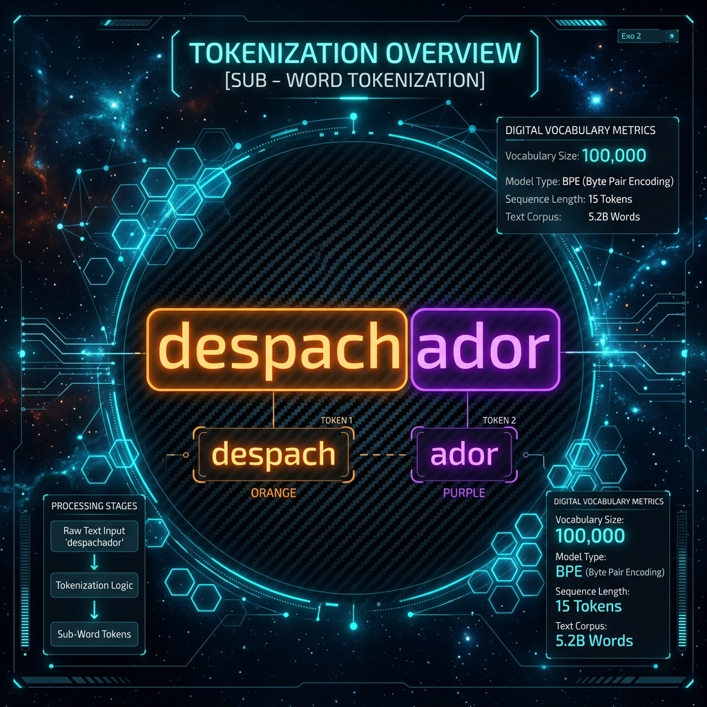
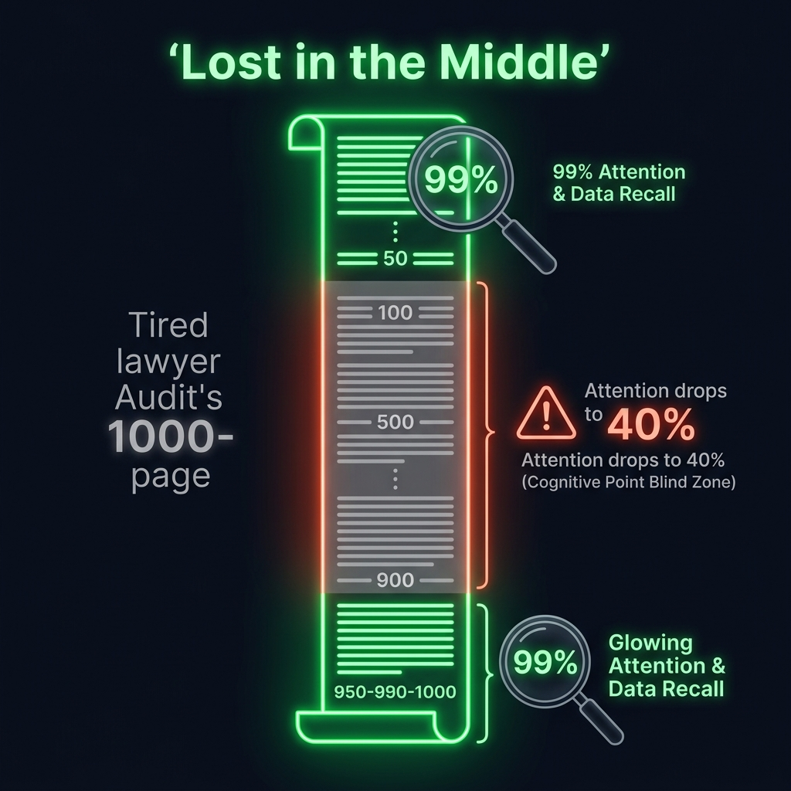
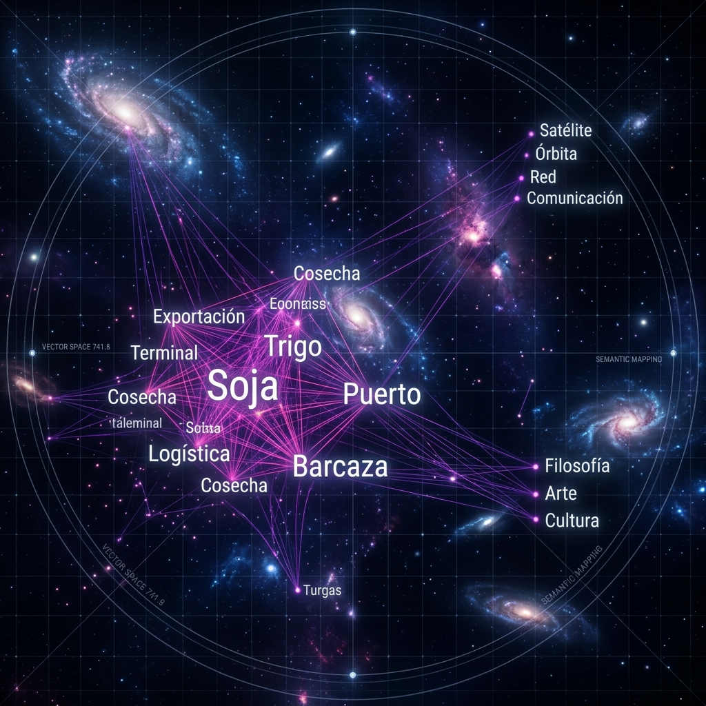
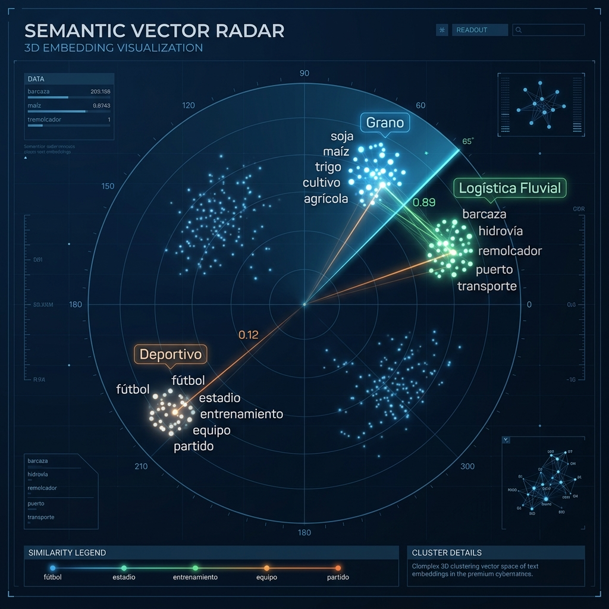
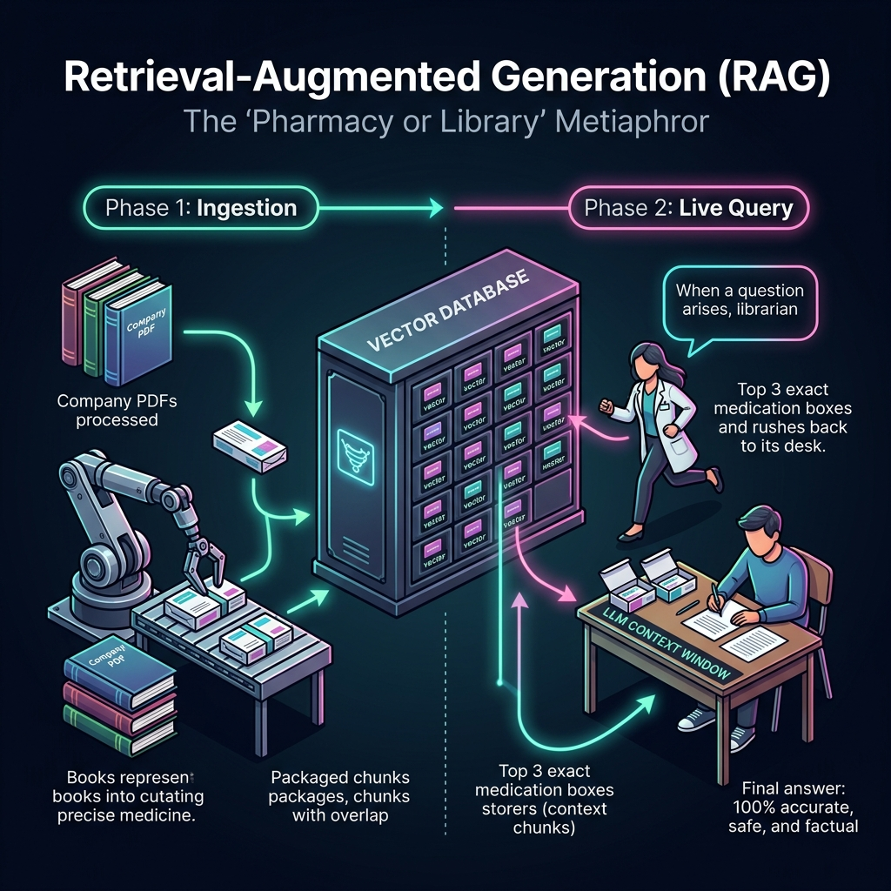
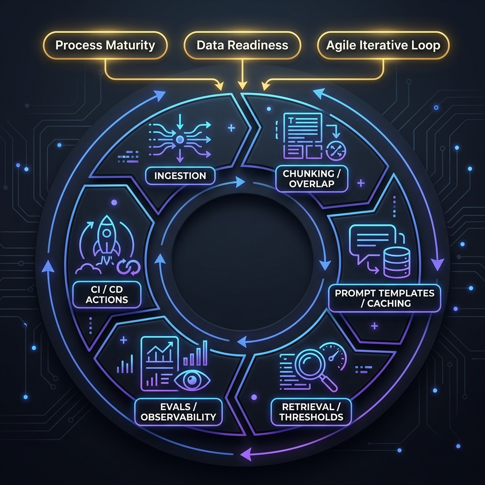

I. Conceptos Fundamentales de IA Generativa & RAG
Una red neuronal de aprendizaje profundo basada predominantemente en la arquitectura Transformer (propuesta originalmente por Vaswani et al., 2017), entrenada mediante aprendizaje auto-supervisado (Causal Language Modeling) sobre corpus masivos de texto a escala global. Su núcleo técnico se apoya en mecanismos de Self-Attention (Auto-atención Multi-Cabeza) que calculan la relevancia relativa de cada palabra o fragmento de texto con respecto a los demás en una secuencia. Matemáticamente, el modelo realiza predicciones probabilísticas de la siguiente unidad lingüística más coherente dado un contexto previo (Next-Token Prediction), computando una distribución de probabilidad de tipo Softmax sobre un vocabulario $V$ de alta dimensión (que suele oscilar entre 32,000 y 250,000 tokens independientes).
Perspectiva del PM: Debes entender el LLM como un microservicio de infraestructura probabilística (un motor de inferencia) consumido mediante APIs seguras. Tu rol no es esperar que el LLM "razone" o "adivine" la lógica de tu negocio por arte de magia, sino estructurar de forma determinista y estricta el prompt de entrada, controlar sus hiperparámetros lógicos —como la Temperatura ($T=0$ para máxima consistencia factual corporativa, $T > 0.7$ para creatividad)— y diseñar guardarraíles lógicos que rodeen al modelo para garantizar su comportamiento comercial seguro.
La unidad fundamental y mínima de procesamiento computacional, lingüístico y matemático utilizada por un modelo de lenguaje de gran escala. Los LLMs no procesan texto crudo carácter por carácter ni palabra por palabra de forma directa. En su lugar, el texto de entrada es convertido en tokens mediante algoritmos de tokenización de sub-palabras como Byte Pair Encoding (BPE), WordPiece o SentencePiece. Este proceso divide palabras complejas en raíces semánticas y afijos gramaticales discretos, permitiendo al modelo procesar términos desconocidos sin desbordar su vocabulario. Como regla métrica de negocio estándar en la industria de la IA: 1000 tokens equivalen aproximadamente a 750 palabras en inglés, mientras que en español suele requerir una proporción ligeramente mayor de tokens por palabra (aproximadamente un 20% a 30% más).

Gráfico A: Segmentación BPE (Byte Pair Encoding) por raíces semánticas vs. variantes gramaticales rígidas.
Perspectiva del PM: Toda consulta de API de IA factura de forma variable según el volumen exacto de tokens de entrada (Input tokens) y tokens generados de salida (Output tokens). El PM de IA debe auditar de manera constante esta métrica, ya que determina directamente la latencia de la aplicación (el tiempo de espera del usuario, medido en tokens por segundo) y el costo directo del servicio (Cost of Goods Sold - COGS), lo que impacta de forma radical en el margen unitario de tu modelo de negocio de SaaS empresarial.
El límite de memoria volátil y de corto plazo (asociado a la capacidad de la caché clave-valor o KV Cache de la arquitectura Transformer) que un modelo de lenguaje puede retener, procesar y direccionar en una única llamada de API. Este límite físico se mide estrictamente en tokens e incluye de forma sumada tanto los tokens inyectados en la consulta por el usuario (Contexto de Entrada) como los tokens generados por el modelo en su respuesta (Output de Salida). Si una consulta excede este límite físico (ej. 128k tokens en GPT-4o, 2M en Gemini 1.5 Pro), el sistema sufrirá truncamiento de datos, perdiendo la capacidad de correlacionar la información inicial con la final.

Gráfico B: Mapa de calor de atención del LLM y efecto 'Lost in the Middle' (Curva en U de retención de información).
Perspectiva del PM: Aunque las ventanas de contexto modernas son masivas, saturarlas inútilmente inyectando documentos extensos enteros en el prompt dispara exponencialmente los costos financieros y degrada drásticamente la velocidad de respuesta (latencia de primer token o Time to First Token - TTFT). Tu rol es coordinar con los ingenieros para mantener la ventana de contexto lo más pequeña, limpia y enfocada posible, inyectando exclusivamente la porción exacta de datos que responde a la necesidad inmediata del usuario.
La disciplina sistemática de estructurar, diseñar y refinar las instrucciones, delimitadores, variables dinámicas y restricciones de entrada que se inyectan en un modelo de lenguaje para condicionar su salida probabilística hacia un comportamiento determinista de negocio. Involucra técnicas avanzadas como Few-Shot Prompting (proveer ejemplos estructurados de entrada-salida), Chain-of-Thought (CoT) (forzar al modelo a generar y exponer una secuencia de pasos lógicos intermedios antes de emitir la respuesta final para reducir errores de cálculo), delimitadores de protección (ej. etiquetas XML) para prevenir inyecciones maliciosas del usuario, y la definición estricta del perfil de comportamiento del sistema (System Prompt).
Perspectiva del PM: En entornos corporativos de producción de software, los prompts corporativos jamás se escriben a mano de forma improvisada en un chat. Se programan en el código del servidor backend como plantillas fijas y parametrizables (Prompt Templates), aislando por completo las instrucciones del sistema y las reglas de gobernanza del negocio de los ojos del usuario final, protegiendo así la propiedad intelectual de la compañía.
El proceso matemático y el modelo especializado (ej. `text-embedding-3-small` de OpenAI) utilizado para proyectar y mapear conceptos de lenguaje natural (palabras, oraciones, párrafos o documentos enteros) en vectores numéricos continuos de alta dimensión y densidad (usualmente vectores de 1536 o 3072 dimensiones decimales). La magia técnica de los embeddings radica en que capturan el significado conceptual y semántico del texto y lo posicionan geométricamente en un hiperespacio multidimensional. La cercanía semántica entre dos conceptos traducidos a embeddings se calcula mediante funciones matemáticas de distancia vectorial, siendo la Similitud de Coseno la métrica estándar de la industria (midiendo el coseno del ángulo formado por dos vectores: $\cos(\theta) = \frac{A \cdot B}{\|A\| \|B\|}$).

Gráfico C: Proyección y distribución geométrica del lenguaje natural en un espacio vectorial multidimensional.
Perspectiva del PM: Los embeddings representan el pilar fundamental que habilita a tus productos a realizar búsquedas semánticas y conceptuales. Permiten que el buscador de tu software entienda exactamente qué quiere localizar el usuario de negocio aunque escriba con sinónimos coloquiales, términos locales de aduana, o cometa errores ortográficos y gramaticales severos, superando por completo las limitaciones de las búsquedas tradicionales basadas en coincidencia exacta de palabras clave rígidas.
Un motor de base de datos especializado y optimizado arquitectónicamente para el almacenamiento persistente, indexación y consulta ultrarrápida de vectores numéricos de alta dimensión (embeddings). A diferencia de las bases de datos relacionales tradicionales (SQL) que indexan y buscan coincidencias por columnas lógicas o índices B-Tree, las bases vectoriales (como Pinecone, Chroma, Qdrant o Milvus) utilizan algoritmos de Búsqueda del Vecino Más Cercano Aproximado (ANN - Approximate Nearest Neighbor) como HNSW (Hierarchical Navigable Small World) para rastrear y recuperar los vectores con mayor similitud semántica sobre colecciones de millones de documentos en milisegundos.

Gráfico D: Radar semántico y agrupamiento conceptual (clústeres logísticos vs. agrícolas).
Perspectiva del PM: La base de datos vectorial constituye la memoria semántica persistente y segura de largo plazo para tus desarrollos empresariales de IA. Como PM, debes saber que esta base de datos es el pilar central que te permite inyectar bases de conocimiento privadas, dinámicas y propietarias del negocio en tus sistemas sin comprometer la privacidad ni violar el límite de almacenamiento temporal del escritorio cognitivo del LLM.
El algoritmo de preprocesamiento de datos offline mediante el cual documentos extensos de texto sin estructura clara (PDFs de normativas, manuales técnicos de 300 páginas, logs corporativos) son segmentados y divididos en fragmentos o bloques discretos de menor tamaño (ej. bloques de 500 tokens). La técnica líder en la industria es el Recursive Character Chunking, que evalúa jerárquicamente un arreglo de delimitadores de texto `["\n\n", "\n", " ", ""]` (párrafos, oraciones, palabras, caracteres) para realizar los cortes semánticos de forma limpia, evitando cortar oraciones a la mitad y preservando la integridad del mensaje lógico en cada bloque.
Perspectiva del PM: El diseño de la estrategia de Chunking es una decisión de arquitectura de producto crítica que determina el nivel de "resolución" de la memoria del bot. Si los chunks son excesivamente grandes, inyectarás ruido e información irrelevante a la ventana de contexto, disparando costos; si los chunks son excesivamente pequeños (ej. oraciones aisladas de 20 tokens), perderás la cohesión sintáctica y el bot no tendrá contexto suficiente para responder de forma inteligente.
La técnica de ingeniería de datos consistente en configurar un volumen de redundancia de texto predefinido (usualmente medido en tokens o en porcentaje, típicamente del 10% al 20% del tamaño total del chunk) entre fragmentos contiguos durante el proceso de segmentación de un documento. Implica programar al fragmentador para que repita el bloque final de tokens del Chunk A al inicio del Chunk B (por ejemplo, si el tamaño del chunk es de 500 tokens y el overlap es de 75 tokens, los últimos 75 tokens del Fragmento 1 se duplicarán de forma idéntica al inicio del Fragmento 2).
Perspectiva del PM: El overlap es el seguro contra pérdidas de contexto en las uniones. Como PM de IA, debes calibrar esta variable con precisión en tus especificaciones funcionales: un solapamiento muy bajo provocará que el bot no logre relacionar conceptos divididos por el fragmentador; un solapamiento exageradamente alto inflará inútilmente el espacio de almacenamiento vectorial y duplicará costos de procesamiento de tokens de entrada repetitivos en tus facturas.
Una arquitectura de software empresarial de vanguardia diseñada para enriquecer dinámicamente el prompt inyectado en un LLM con información factual privada, dinámica y autorizada extraída de fuentes de datos corporativas externas en tiempo real. Su ciclo de vida técnico consta de dos grandes pipelines: 1) Indexación Offline: Curaduría de PDFs -> Chunking con Overlap -> Conversión a Embeddings -> Carga en Vector DB. 2) Consulta Online: El usuario pregunta -> El backend calcula el embedding de la pregunta -> Busca similitud de coseno en la Vector DB -> Recupera los $k$ chunks de mayor score -> Inyecta estos chunks en un Prompt Template estricto -> Envía el Prompt Enriquecido al LLM -> El LLM genera una respuesta sustentada exclusivamente en la evidencia provista.

Gráfico E: Plano detallado de la arquitectura RAG corporativa (Indexación Offline y Búsqueda Semántica Online).
Perspectiva del PM: RAG es el estándar absoluto de la industria para el despliegue de IA en entornos corporativos. Resuelve tres problemas críticos de negocio de una sola vez: 1) Elimina drásticamente las alucinaciones al anclar las respuestas a fuentes reales verificables. 2) Evita incurrir en entrenamientos o fine-tunings de modelos de millones de dólares, permitiendo actualizar la base documental del negocio al instante simplemente actualizando PDFs en la base de datos. 3) Ofrece trazabilidad total y auditoría de fuentes al permitir al bot citar con precisión el nombre del PDF y la página exacta de donde extrajo el dato.
El comportamiento anómalo inherente a la naturaleza probabilística de la arquitectura de decodificación auto-regresiva de los modelos de lenguaje, en el cual el LLM genera una salida lingüística gramaticalmente fluida, coherente y sumamente elocuente, pero que contiene datos fácticos, leyes, regulaciones, números de artículos o tarifas que son completamente inventados, inexistentes o incorrectos. Ocurre porque el modelo optimiza la verosimilitud de la secuencia de palabras de acuerdo con su entrenamiento de lenguaje natural, y no la verdad fáctica subyacente.
Perspectiva del PM: Es el riesgo legal y reputacional número uno de los productos de Inteligencia Artificial Generativa. Como líder de producto, debes estructurar el blindaje semántico del software exigiendo a los desarrolladores la implementación de Confidence Thresholds estrictos, el uso de RAG riguroso y la redacción de instrucciones en el prompt del sistema (System Prompts) sumamente punitivas que ordenen explícitamente al bot decir "No dispongo de información oficial para responder a esta consulta" en lugar de deducir o inventar información ante la menor duda.
Un conjunto de pruebas estático, curado meticulosamente y consensuado formalmente por expertos de negocio y desarrolladores, que contiene un volumen significativo (generalmente entre 50 y 200 casos de uso) de preguntas típicas e interacciones complejas de usuarios asociadas a sus correspondientes respuestas perfectas validadas por humanos (Ground Truth). Se utiliza como el benchmark ineludible de control de calidad semántico para evaluar de forma cuantitativa, reproducible y científica el desempeño del bot mediante suites de pruebas automatizadas ante cualquier cambio en el software.
Perspectiva del PM: En IA empresarial, el testing manual ad-hoc chateando al azar "cinco minutos" no sirve para nada y es irresponsable. Dado que la IA es probabilística, el PM sénior debe exigir la creación y el mantenimiento continuo de un Golden Dataset representativo de los casos extremos de negocio. Este dataset se ejecuta de forma automatizada mediante suites de evaluación ante cada modificación del prompt, del modelo o del chunking, permitiendo al PM certificar con métricas estadísticas sólidas de fidelidad y precisión semántica que el producto mejoró y es seguro antes de ser liberado al mercado.
El proceso de entrenamiento supervisado adicional (Transfer Learning) aplicado sobre un modelo de lenguaje fundacional previamente pre-entrenado. Consiste en exponer al LLM a un conjunto de datos altamente estructurado y específico (típicamente compuesto por miles de ejemplos estructurados de entrada-salida) para ajustar una fracción controlada de sus parámetros y pesos neuronales internos (comúnmente utilizando técnicas de eficiencia de parámetros como LoRA - Low-Rank Adaptation). El fine-tuning no está diseñado para inyectar conocimientos dinámicos factuales, sino para modificar el estilo gramatical del modelo, adaptar su tono, dominar una jerga técnica específica o entrenarlo para generar respuestas estructuradas rígidas (ej. responder estrictamente en formato estructurado JSON sin errores sintácticos).
Perspectiva del PM: Un error de arquitectura clásico y sumamente costoso que cometen las empresas es intentar usar Fine-Tuning para enseñarle "nuevos conocimientos dinámicos corporativos" a un bot. Grábate esto como máxima de negocio: el Fine-Tuning enseña CÓMO hablar (estilo, formato estructurado y tono), pero RAG enseña QUÉ decir (datos factuales dinámicos e información del negocio). Como PM estratégico, debes defender esta distinción técnica para ahorrarle a tu compañía miles de dólares en servidores e infraestructura de computación innecesaria.
II. Premisas de Oro y Etapas del Desarrollo de IA (Software Probabilístico)
El desarrollo de software basado en IA Generativa y RAG requiere filtros estrictos de viabilidad, gobernanza corporativa y metodologías ágiles continuas. Conoce las 3 Premisas de Oro y las 6 Etapas Técnicas de Ingeniería.

Gráfico F: El Ciclo de Vida del Desarrollo de IA (3 Premisas de Viabilidad & 6 Etapas Técnicas de Ingeniería).
El nivel de estandarización, consistencia lógica y predictibilidad operativa que posee un flujo de trabajo de negocio antes de ser intervenido por un sistema de IA. Exige que el proceso operativo de la empresa cuente con manuales de procedimientos claros, flujos de decisión explícitos y SLAs humanos estables. Automatizar un proceso operativo que hoy depende del humor, del criterio ad-hoc o de la interpretación discrecional de cada empleado humano es inviable: "No se puede automatizar el caos". Si intentas automatizar un proceso caótico y desestructurado mediante IA, lo único que lograrás será escalar ese desorden operativo a velocidades y volúmenes algorítmicos catastróficos.
Perspectiva del PM: Antes de redactar una sola línea de código o prompt, el PM de IA debe realizar una auditoría de madurez del proceso de negocio. Si el proceso adolece de flujos definidos o no cuenta con manuales estables, el PM debe tener la firmeza estratégica de pausar el desarrollo de software y trabajar primero junto a los líderes de operaciones para ordenar, simplificar y estructurar el proceso de negocio humano.
La disponibilidad técnica, digitalización, estructura y accesibilidad programática que posee la información propietaria de la empresa requerida para alimentar el sistema de IA. Exige que los documentos no solo existan físicamente, sino que estén digitalizados en formatos legibles por máquina (ej. archivos PDF de texto nativo y no imágenes borrosas escaneadas torcidamente), libres de codificaciones de caracteres corruptas (UTF-8 normalizado), limpios de duplicados históricos contradictorios y almacenados en sistemas corporativos seguros expuestos a través de APIs corporativas internas (como SharePoint, ERPs, bases de datos SQL o data lakes corporativos).
Perspectiva del PM: El PM de IA debe auditar de forma severa el "estado físico" de los datos. Jamás debes asumir que porque una empresa tiene "muchos manuales archivados en red" el RAG funcionará bien. Debes presupuestar, planificar y liderar junto con los ingenieros de datos una fase dura previa de extracción, normalización, limpieza y OCR (ETL), garantizando que el pipeline de embeddings consuma información corporativa de alta pureza.
El marco metodológico adaptativo de gestión de proyectos que rige el ciclo de vida del software probabilístico, descartando las metodologías rígidas de cascada (Waterfall). Al ser la IA un software basado en distribuciones estadísticas donde pequeñas fluctuaciones en las variables de entrada, cambios mínimos en los prompts o actualizaciones menores del modelo pueden alterar sustancialmente el output, es técnicamente inviable definir especificaciones técnicas cerradas e inmutables al inicio del proyecto. Exige sprints cortos de experimentación semántica, monitoreo continuo de telemetría, recalibración de umbrales y despliegues incrementales ágiles.
Perspectiva del PM: Debes educar de forma incansable a los directores de la empresa y gestionar las expectativas comerciales: en Inteligencia Artificial no existe el concepto de "producto 100% terminado de una vez y para siempre". El PM debe concebir el bot RAG como un organismo vivo que requiere un ciclo continuo de mantenimiento ágil, presupuestando tareas de recalibración semanal de prompts, curaduría de la base vectorial y ampliación continua del Golden Dataset basadas en la telemetría real del usuario.
La etapa fundacional y offline del pipeline técnico en la cual los ingenieros de datos extraen la información corporativa propietaria de los repositorios de la empresa, limpian el "ruido documental" redundante —diseñando scripts que remueven metadatos inútiles de PDFs, encabezados corporativos repetitivos, pies de página, firmas digitales o páginas en blanco que consumirían tokens de contexto inútilmente—, normalizan el encoding lingüístico a UTF-8 y estandarizan los documentos para garantizar una ingesta limpia.
Perspectiva del PM: "Basura entra, basura sale" (Garbage In, Garbage Out). Una curaduría deficiente arruinará todo el pipeline RAG. El PM debe redactar con precisión clínica los Criterios de Aceptación de esta etapa técnica, exigiendo de forma rigurosa que la información inyectada cumpla estrictamente con las normativas corporativas de privacidad (Enterprise SLAs) y gobernanza de datos de la compañía.
La segunda etapa del ciclo técnico en la cual los textos ya curados y limpios son fragmentados algorítmicamente mediante técnicas de Recursive Character Chunking en bloques homogéneos y manejables de tamaño óptimo (ej. 500 tokens) encabalgados mediante un solapamiento semántico calibrado (Overlap del 15%). Inmediatamente, cada chunk individual es procesado por un modelo de embeddings de alta fidelidad para calcular su representación geométrica vectorial de 1536 dimensiones, cargando y clasificando dichos vectores en la base vectorial (Pinecone) asociada a metadatos estructurados discretos.
Perspectiva del PM: Esta etapa técnica determina directamente la precisión y agudeza de la memoria del bot. El PM debe co-liderar con el arquitecto de datos el balance estratégico de esta configuración: chunks muy grandes saturan la ventana de contexto y disparan exponencialmente la facturación de tokens; chunks extremadamente pequeños destruyen la gramática sintáctica y devalúan la precisión semántica del recuperador.
La tercera etapa de desarrollo en la cual los programadores construyen el flujo lógico de la aplicación utilizando orquestadores (como LangChain o LlamaIndex) y codifican las plantillas fijas de prompts en el backend (Prompt Templates), aislando las instrucciones lógicas fijas de los ojos del usuario final. Asimismo, en esta fase se implementan políticas estrictas de Prompt Caching (almacenamiento en caché de prompts en la RAM de la API del LLM) para congelar el sistema estático de instrucciones masivas corporativas, reduciendo drásticamente la latencia física de respuesta y los costos de input.
Perspectiva del PM: El PM de IA es el dueño funcional de las reglas de negocio codificadas en esta fase. Define el rol del system prompt, las restricciones de tono y los fallbacks de seguridad. Además, debe auditar la correcta implementación técnica de Prompt Caching para bajar los costos financieros de tokens de entrada hasta en un 50% en los comités de presupuesto.
La cuarta etapa técnica que opera en tiempo real (fase online) cuando el usuario lanza una pregunta en el chat. El pipeline calcula en milisegundos el embedding de la consulta, aplica un filtro estructurado duro (Metadata Filtering por ej. Puerto, Año) sobre la base vectorial para reducir instantáneamente el espacio de búsqueda, calcula las distancias de coseno recuperando los chunks de mayor relevancia semántica, y evalúa dichos scores contra un Confidence Threshold (Umbral de Confianza) estrictamente calibrado (ej. 0.75). Si el score es inferior, el pipeline bloquea la inferencia del LLM y activa de inmediato la lógica segura de "No-Answer".
Perspectiva del PM: Esta etapa constituye el blindaje reputacional y legal de la empresa contra alucinaciones. El PM de IA debe liderar la calibración estadística del Confidence Threshold a 0.75 en Staging: un umbral muy bajo (ej. 0.40) dejará pasar alucinaciones muy peligrosas; un umbral extremadamente alto (ej. 0.95) detendrá respuestas legítimas frustrando al usuario.
La quinta etapa del ciclo de vida técnico en la cual los desarrolladores programan suites de pruebas semánticas automatizadas (Evals) mediante herramientas especializadas de observabilidad (como Langfuse o Arize Phoenix). Estas suites corren de forma automatizada un lote representativo de 50 a 150 consultas reales y críticas del negocio extraídas de tu Golden Dataset, evaluando matemáticamente métricas probabilísticas clave: fidelidad al contexto (Context Adherence), relevancia del output con respecto a la query del usuario y cobertura de recuperación semántica.
Perspectiva del PM: Es el corazón de la gobernanza de producto de IA empresarial. El PM de IA es el responsable absoluto de curar el Golden Dataset y establecer las metas estadísticas de calidad semántica mínimas requeridas. Estas devaluaciones numéricas le dan al PM un respaldo científico inestimable ante comités de ciberseguridad, auditorías internacionales o juntas directivas.
La sexta y última etapa del ciclo técnico de desarrollo de IA empresarial, en la cual la suite de evaluaciones semánticas automatizadas (Evals) se acopla e integra físicamente dentro de los pipelines de integración y despliegue continuos de la compañía (ej. GitHub Actions). Cada vez que un desarrollador de software abre una *Pull Request* para alterar un prompt template de Langfuse, actualizar un embedding o re-estructurar la base de datos vectorial, el pipeline corre el crash-test completo del Golden Dataset de forma automática en los servidores de GitHub. Si el promedio matemático de Context Adherence decae del estándar estipulado por el PM (ej. 90%), el pipeline de CI/CD falla de inmediato en rojo y bloquea el despliegue automático a Staging/Producción.
Perspectiva del PM: Representa el pilar fundamental de la calidad corporativa y la Definición de Terminado (DoD - Definition of Done) que el PM de IA debe exigir. Garantiza la estabilidad del sistema corporativo a largo plazo: ningún cambio de código inestable o regresión semántica del bot podrá llegar a tocar jamás al usuario final, transformando los experimentos probabilísticos en un software corporativo robusto, seguro y altamente confiable.
Un sistema de Inteligencia Artificial Generativa de tipo activo y agéntico estructurado mediante loops de toma de decisiones autónomos (comúnmente implementando la arquitectura ReAct - Reason + Act). A diferencia de los sistemas RAG tradicionales, que actúan de manera pasiva como "sistemas de libro abierto" (respondiendo consultas únicamente cuando el usuario las formula y limitándose a resumir textos), los agentes de ventas autónomos (AI SDR) son capaces de definir planes de ejecución independientes, invocar APIs externas de forma dinámica (Tool Calling), actualizar registros en bases de datos relacionales o CRMs (ej. Salesforce), procesar correos electrónicos entrantes y agendar reuniones comerciales de forma autónoma en el calendario del usuario mediante un loop de feedback dinámico.
Perspectiva del PM: Los sistemas agénticos autónomos representan la frontera tecnológica más cotizada de la Sesión 3. Como PM sénior de IA, tu rol fundamental es diseñar y especificar loops lógicos rígidos, orquestadores robustos y guardarraíles de costos y seguridad estrictos (ej. límites rígidos de llamadas recurrentes a APIs para evitar loops infinitos de facturación, y compuertas de confirmación humana obligatoria en puntos críticos del flujo antes de enviar un correo real a un cliente de gran volumen). Esto garantiza que la autonomía y proactividad del bot operen bajo absoluta gobernanza y seguridad de negocio.